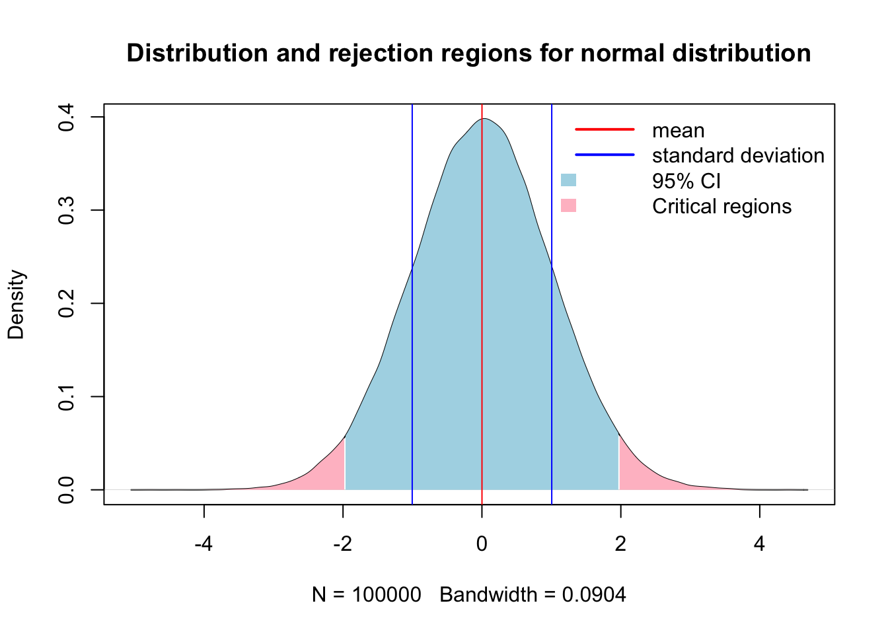
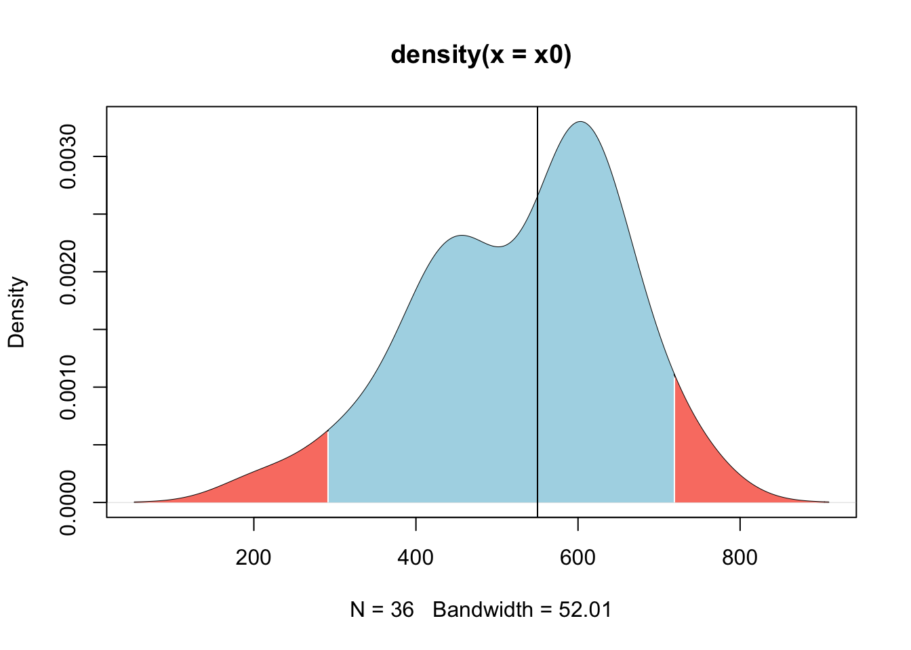
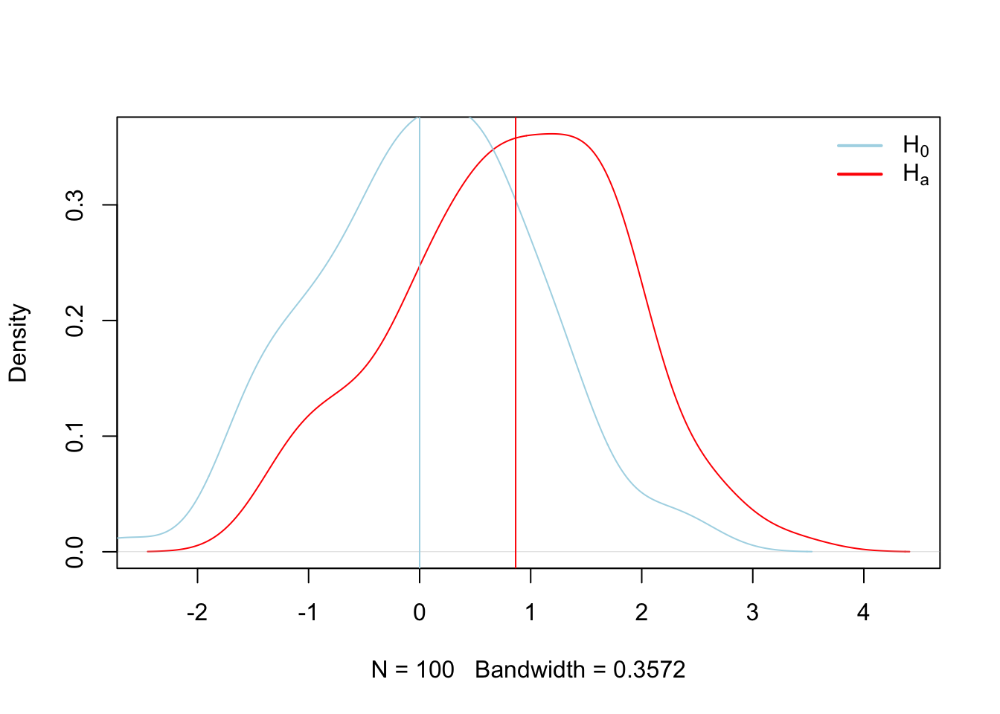

Chapter 3 Standard Statistics
This is the section that most of you will find more familiar as we cover concepts typically considered “classical” statistics. Studying complex systems with high levels of natural variability requires utilization of statistics to infer pattern and causation from data.
3.1 Null Hypothesis Testing
Null Hypothesis Significance Testing has been extensively used to make inference and test hypothesis (stephensInferenceEcologyEvolution2007?), but has also experienced extensive criticism due to the logical fallacies associated with the assumptions required to make inference regarding test statistics (hagenPraiseNullHypothesis?; sedgwickTrialsTribulationsTeaching?; wuThereIntrinsicLogical2018?). Whichever side of the fence you fall on, you should be aware of both the arguments for and against the utilization of NHST and by extension p-values in making scientific inference. After extensive reading, I will give you my anedotal opionion as of today (09/17/2025) of the issue. Whatever inferential paradigm you choose to use for your research is warranted providing you understand the underlying assumptions the statistical test makes, and exactly what each test statistic is testing (hagenPraiseNullHypothesis?; wassersteinASAStatementValues2016?). The most common critique of NHST that I have observed is that scientists and statisticians are not trained how to use tests appropriately, resulting in errant results being reported (hagenPraiseNullHypothesis?; ioannidisWhyMostPublished2005?).
The magnitude of statistical tests designed for numerous experimental frameworks lend to the problem. Scientists without formal training in the choice of statistical tests are often highly motivated to find significant results, that is, to reject som \(H_o\) hypothesis in support of the \(H_A\). This motivation is counter to the primary motivation of NHST, which is to reject the \(H_o\) with trepidation (perezgonzalezFisherNeymanPearsonNHST2015?). This encourages researchers to go in search of significant results by utilizing any number of seemingly plausible available methods to obtain results which we find either either interesting, plausible, personally gratifying, or worse, important for the success of our career. However, whether made through ignorance or malice, that fact that we may report erroneous research results, and that most research results which we may build our research careers on are false (ioannidisWhyMostPublished2005?), should give us at least momentary pause.
Due to the magnitude of potential scientific tests, which fill tomes of literature and giant volumes of books, teaching standardized statistics which seek to make inference of population central values and affirm or nullify \(H_o\) is extremely difficult task to undertake in the limited time we have here. Add in the conflation of posterior and apriori tests, and the conflation of the two, along with nonparametric and parametric tests, creating a clear picture of statistical analysis becomes difficult. So what should we do? I believe the answer rests in the application of two first principles. The first is to hold yourself to the highest set of moral ideals, seeking to reinforce your research findings through severe critique of the results by testing their endurance through multiple tests and alignment with quality research (mayoStatisticalInferenceSevere2018?). Secondly and of equal importance is to put in serious effort to read and understand the machinery of statistical tests and their underlying assumptions to ensure that the hypothesis you’re testing is the inference they are making (wuThereIntrinsicLogical2018?).
3.1.1 Population central values
Making inference about a population is the foundation of beginning a good statistical analysis, and often starts in the exploratory analysis we began to explore in chapter 2. A population takes on numerical descriptive values known as parameters. Typical parameters of a population is the mean (\(u\)), median (M), standard deviation (\(σ\)), and proportion (\(π\)) (Ott and Longnecker 2016). For the purposes of hypothesis testing, we will make inference of these parameters in one of two ways. First is to estimate the value of the population, or we will test a hypothesis. The 95% confidence interval is the calculated interval over which 95% of the data will fall given a normal distribution around the central value, \(u\) in this case. The 95% confidence interval can be retrieved using the quantile function in R, or calculated using the equation of \(u ± 1.96σ/√n\).
Here is an example of creating a population with known values of:
N 10000 population size mean of 0 standard deviation of 1
n = 10000 # Population size
u = 0 # population mean or central value
sd = 1 # Standard deviation
x = rnorm(100000, mean = u, sd = sd)
x.den = density(x)
# 95% confidence interval time
q0.025 = quantile(x, 0.025)
q0.975 = quantile(x, 0.975)
# Identify x-values within the 95% CI
x.ci <- x.den$x[x.den$x >= q0.025 & x.den$x <= q0.975]
y.ci <- x.den$y[x.den$x >= q0.025 & x.den$x <= q0.975]
{
plot(x.den)
# Add shaded polygon for 95% CI
polygon(c(x.ci[1], x.ci, x.ci[length(x.ci)]),
c(0, y.ci, 0),
col = 'lightblue', border = NA)
abline(v = c(mean(x)-sd(x),mean(x), mean(x)+sd(x)), col = c('blue','red','blue'))
legend("topright",
legend = c('mean','standard deviation', '95% CI'),
col = c("red",'blue',NA),
fill = c(NA,NA,'lightblue'),
border = NA,
lty = c(1,1,NA),
lwd = c(2,2,NA),
seg.len = 3,
bty = "n")
}
Now lets do that in one of our example datasets.
library(qthink)
data("bodyweight")
x = bodyweight$BW0
x.den = density(x)
# 95% confidence interval time
q0.025 = quantile(x, 0.025)
q0.975 = quantile(x, 0.975)
# Identify x-values within the 95% CI
x.ci <- x.den$x[x.den$x >= q0.025 & x.den$x <= q0.975]
y.ci <- x.den$y[x.den$x >= q0.025 & x.den$x <= q0.975]
par(mfrow = c(1,2))
{
hist(x)
plot(x.den)
# Add shaded polygon for 95% CI
polygon(c(x.ci[1], x.ci, x.ci[length(x.ci)]),
c(0, y.ci, 0),
col = 'lightblue', border = NA)
abline(v = c(mean(x)-sd(x),mean(x), mean(x)+sd(x)), col = c('blue','red','blue'))
# legend("topright",
# legend = c('mean','standard deviation', '95% CI'),
# col = c("red",'blue',NA),
# fill = c(NA,NA,'lightblue'),
# border = NA,
# lty = c(1,1,NA),
# lwd = c(2,2,NA),
# seg.len = 1,
# bty = "n")
}
Here we see a the same values of our population of bodyweights on day 0 from our heifers. Note how they do not follow the neat normal distribution, but do approximate it closely enough, at least visually. Here arises one of the first critiques of NHST that all tests assume that the population distribution follows a normal bell curve if enough samples are taken.
Sample size
This begs the question, how many samples are necessary to make inference of a populations central value? Here lies one of the first critiques of NHST, as we must assume that the overall greater population follows some known distribution, in this case, a normal distribution, and that we are sampling from that population. However, the greater population is actually unknowable outside of simply measuring the entire population. Samples are expensive, so at some point we have to simply accept that we have sampled enough, which is to say done our due diligence to collect an adequate representation of the greater population so we can make inference from it. Below we can show mathematically how many samples are required. The goal of sampling is to create a credible interval which has a given chance of containing \(u\), or the population mean. This reasonable level of certainty is typically set at 90-95% due to tradition. However, this runs two risks. 1) 95% levels of confidence means you run a 1 in 20 chance of not capturing the population mean. Equate this to having a 20 round magazine clip loaded into a gun that you are taking on a camping trip to the Little Bighorns in Wyoming for protection against Grizzly bears, in which 1 of the 20 bullets is a blank. Is this a risk you ar willing to take? The second risk is the inverse of the first, which is that this may be an unreasonble and arbritarily high level of confidence that would reduce the percieved validity of aquired data, particularly if the data is novel, but funds or circumstances meant obtaining enough samples to obtain this level of confidence was not possible, and thus the research was not conducted or the findings not reported.
The formula is as follows:
\(n = (z_σ/2)^2^ σ^2^ / E^2^\)
and in code for the heifer bodyweight on day 0 Because the heifers range from 364, 638, the typical assumption to approximate the population \(σ\) is to take 68.5, and we might arbritrarily choose our accuracy to be 25 lbs.
## [1] 28.8412So, from this we can interpret that in order to quantify the central limit (\(u\)), of the population of heifers within 25 lbs with 95% confidence, we need 28 heifers. Now note how this changes as we tighten our accuracy levels.
E = seq(50,1,-1)
sigma = diff(range(x))/4
n = c()
for (i in E) {
n[i] = (1.96^2 * sigma^2)/E[i]^2
}
{
par(mfrow = c(1,2))
plot(E,n, type = 'n')
points(E,n)
lines(E,n, col = 'blue', lwd = 2)
plot(E,n, xlim = c(5,length(E)), ylim = c(0,500))
lines(E,n, col = 'blue')
}
So we see that the desired level of accuracy of our measurement is directly related to the number of samples we have to take. The other parameter, which I would remind you we are making using prior assumptions, is the natural variation which exists in the greater population. How does that vary our sample size at a given level of accuracy?
E = 25 # accuracy level
sigma = seq(1,100,1)
n = c()
for (i in 1:length(sigma)) {
n[i] = (1.96^2 * sigma[i]^2)/E^2
}
{
plot(sigma,n, type = 'n')
points(sigma,n)
lines(sigma,n, col = 'blue', lwd = 2)
}
So here we see that holding accuracy constant and varying the theorized population variance, we dramatically impact the required number of samples we have to take.
Statistical test for u
The statistical test takes on the concept of proof by contradiction, aka, NHST and is comprised of 5 parts.
- Null hypothesis \(H_o\)
- Research hypothesis \(H_a\)
- Test statistics
- Rejection region
- Check assumptions and draw conclusions
The question is if our current measured value is greater than previously measured values. Suppose that
\(u_o\) = 520 representing the combined mean from previous years of measurements \(u\) = 550 representing the mean from the current year
We are testing the following if $H_a: u > 320 $ negates the \(H_o: u<= 320\).
We then have to define the rejection region, and determine if \(u\) falls in the rejection region assuming that \(H_o\) is true.
n = 36
uo = 520 # Mean from previous measurements
u = 550 # Current mean from this year
sd = 124
sigma = sd/sqrt(n)
x0 = rnorm(n, mean = uo, sd = sd)
q025 = quantile(x0, 0.025)
q975 = quantile(x0, 0.975)
x0.den = density(x0)
# Identify x-values within the 95% CI
x.ci <- x0.den$x[x0.den$x >= q025 & x0.den$x <= q975]
y.ci <- x0.den$y[x0.den$x >= q025 & x0.den$x <= q975]
# Left tail: x < q025
x.left <- x0.den$x[x0.den$x <= q025]
y.left <- x0.den$y[x0.den$x <= q025]
# Right tail: x > q975
x.right <- x0.den$x[x0.den$x >= q975]
y.right <- x0.den$y[x0.den$x >= q975]
{
plot(x0.den)
# Add shaded polygon for 95% CI
polygon(c(x.ci[1], x.ci, x.ci[length(x.ci)]),
c(0, y.ci, 0),
col = 'lightblue', border = NA)
# Shade left rejection region
polygon(c(x.left[1], x.left, x.left[length(x.left)]),
c(0, y.left, 0),
col = 'salmon', border = NA)
# Shade right rejection region
polygon(c(x.right[1], x.right, x.right[length(x.right)]),
c(0, y.right, 0),
col = 'salmon', border = NA)
abline(v = u)
# legend("topright",
# legend = c('mean','standard deviation', '95% CI'),
# col = c("red",'blue',NA),
# fill = c(NA,NA,'lightblue'),
# border = NA,
# lty = c(1,1,NA),
# lwd = c(2,2,NA),
# seg.len = 3,
# bty = "n")
}
##
## One Sample t-test
##
## data: x
## t = 11.13, df = 99, p-value < 2.2e-16
## alternative hypothesis: true mean is not equal to 0
## 95 percent confidence interval:
## 0.8484379 1.2165656
## sample estimates:
## mean of x
## 1.032502## [1] 0.44{
plot(x.den, main = '', col = 'red')
lines(x0.den, col = 'lightblue')
abline(v = c(0,quantile(x, probs = c(0.5))), col = c('lightblue','red'), lty = 1)
legend("topright", legend = c(expression(H[0]), expression(H[a])), col = c('lightblue','red'), lty = 1, lwd = 2, bty = "n")
}
3.1.2 Neyman-Pearson
set.seed(3)
d = 0.75
par(mfrow = c(1,2))
p1 = rnorm(1000, mean = 0, sd = 1)
p2 = rnorm(1000, mean = d, sd = 1)
p1.den = density(p1)
p2.den = density(p2)
xo = rnorm(100, mean=0, sd=0.5)
xa = rnorm(100, mean = d, sd = 0.5)
xo.den = density(xo)
xa.den = density(xa)
{
plot(p1.den, col = 'blue', lty = 1, main = 'population')
lines(p2.den, col = 'red', lty = 2)
abline(v = c(mean(xo), mean(xa)), col = c('blue','red'))
plot(xo.den, col = 'blue', lty = 1, main = 'sample')
lines(xa.den, col = 'red', lty = 2)
abline(v = c(mean(xo), mean(xa)), col = c('blue','red'))
}
3.1.3 Two population inference
A statistical test is based upon the concept of the following five parts (Ott and Longnecker 2016):
- Resaerch hypothesis \(H_a\)
- Null hypothesis \(H_o\)
- Test statistic
- Rejection region
- Check assumptions, draw conclusions
# Sample data
xo = rnorm(100, mean = 320, sd = 10)
xa = rnorm(100, mean = 350, sd = 10)
t.test(xo, xa, var.equal = T)##
## Two Sample t-test
##
## data: xo and xa
## t = -21.315, df = 198, p-value < 2.2e-16
## alternative hypothesis: true difference in means is not equal to 0
## 95 percent confidence interval:
## -33.24634 -27.61560
## sample estimates:
## mean of x mean of y
## 320.2175 350.6484# Compute density
xo.den = density(xo)
xa.den = density(xa)
{
# Plot density
plot(xo.den,
xlim = c(min(xo), max(xa)),
ylim = c(0, max(max(xo.den$y), max(xa.den$y))),
main = "", ylab = expression(f(x)))
lines(xa.den, col = 'red')
# # Shade upper 5%
# xo.vals <- xo.den$x[xo.den$x >= q95]
# yo.vals <- xo.den$y[xo.den$x >= q95]
#
# polygon(c(q95, xo.vals, max(xo.vals)),
# c(0, yo.vals, 0),
# col = "pink",
# border = NA)
}
3.2 Intake vs BW Relationship
## ── Attaching core tidyverse packages ──────────────────────── tidyverse 2.0.0 ──
## ✔ dplyr 1.1.4 ✔ readr 2.1.5
## ✔ forcats 1.0.0 ✔ stringr 1.5.1
## ✔ ggplot2 3.5.2 ✔ tibble 3.2.1
## ✔ lubridate 1.9.4 ✔ tidyr 1.3.1
## ✔ purrr 1.0.4
## ── Conflicts ────────────────────────────────────────── tidyverse_conflicts() ──
## ✖ dplyr::filter() masks stats::filter()
## ✖ dplyr::lag() masks stats::lag()
## ℹ Use the conflicted package (<http://conflicted.r-lib.org/>) to force all conflicts to become errors##
## Attaching package: 'data.table'
##
## The following objects are masked from 'package:lubridate':
##
## hour, isoweek, mday, minute, month, quarter, second, wday, week,
## yday, year
##
## The following objects are masked from 'package:dplyr':
##
## between, first, last
##
## The following object is masked from 'package:purrr':
##
## transposelibrary(readxl) # Reading excel
library(qthink)
# Data
?bodyweight
data("bodyweight")
head(bodyweight)## Ref ID VID EID Pen BW-42 BW-1 BW0 BW7 BW14 BW21 BW28
## <num> <num> <num> <num> <num> <num> <num> <num> <num> <num> <num>
## 1: 1 248 9.820004e+14 8 574 650 638 636 670 716 698
## 2: 2 249 9.820004e+14 8 463 514 504 496 512 544 544
## 3: 3 276 9.820004e+14 6 389 453 445 450 477 508 499
## 4: 4 298 9.820004e+14 6 436 504 489 487 522 530 530
## 5: 5 322 9.820004e+14 8 436 512 504 532 562 592 592
## 6: 6 346 9.820004e+14 6 416 446 441 398 418 443 447
## BW35 BW42 BW49 BW56 BW70 Shipping Loss Creep_Gain Pre-Wean_ADG CreepTrt
## <num> <num> <num> <num> <num> <num> <num> <num> <char>
## 1: 732 732 768 786 806 -12 76 1.8095238 A
## 2: 564 576 600 608 670 -10 51 1.2142857 A
## 3: 534 550 548 594 636 -8 64 1.5238095 B
## 4: 566 590 578 624 650 -15 68 1.6190476 B
## 5: 600 628 654 678 702 -8 76 1.8095238 A
## 6: 464 480 468 518 560 -5 30 0.7142857 B
## WeanTrt
## <char>
## 1: A
## 2: A
## 3: A
## 4: A
## 5: A
## 6: Ad.bw = melt.data.table(data = bodyweight, measure.vars = c(5:16), value.name = 'BW', variable.name = 'name')
d.bw$Day = parse_number(as.character(d.bw$name))
### Assign day
days = seq(min(d.bw$Day), max(d.bw$Day), by = 1)
days = days[days >= 0]
days## [1] 0 1 2 3 4 5 6 7 8 9 10 11 12 13 14 15 16 17 18 19 20 21 22 23 24
## [26] 25 26 27 28 29 30 31 32 33 34 35 36 37 38 39 40 41 42 43 44 45 46 47 48 49
## [51] 50 51 52 53 54 55 56 57 58 59 60 61 62 63 64 65 66 67 68 69 70d.days = data.table(Day = days)
VIDs = data.table(VID = unique(d.bw$VID))
d.daysvid = merge(days, VIDs, by = NULL) %>%
as.data.table
names(d.daysvid) = c('Day','VID')
names(d.days)## [1] "Day"3.3 Anovas
## # A tibble: 77 × 21
## VID Pen CreepTrt WeanTrt D_42_BW Creep_Gain Shipping_Loss Day56_InitialBW
## <dbl> <dbl> <chr> <chr> <dbl> <dbl> <dbl> <dbl>
## 1 248 8 A A 261. 34.5 -5.44 287.
## 2 249 8 A A 210. 23.1 -4.54 223.
## 3 276 6 B A 177. 29.0 -3.63 200.
## 4 298 6 B A 198. 30.8 -6.80 218.
## 5 322 8 A A 198. 34.5 -3.63 233.
## 6 346 6 B A 189. 13.6 -2.27 185.
## 7 364 5 A B 191. 40.8 -14.1 217.
## 8 367 7 B B 160 17.2 -8.16 164.
## 9 453 6 B A 195 35.8 -12.2 218.
## 10 472 5 A B 183. 37.6 -4.99 211.
## # ℹ 67 more rows
## # ℹ 13 more variables: Day56_ADG <dbl>, Day56_MMBW <dbl>, Day56_DMI <dbl>,
## # Day56_Residual <dbl>, D_1_EV <dbl>, AVE_TTB <dbl>, BVFREQ <dbl>,
## # BVDUR <dbl>, BVFREQsd <dbl>, BVDURsd <dbl>, uDMI <dbl>, sdDMI <dbl>,
## # cvDMI <dbl>##
## Call:
## lm(formula = Day56_ADG ~ CreepTrt * WeanTrt, data = heifer)
##
## Residuals:
## Min 1Q Median 3Q Max
## -0.78650 -0.10719 -0.00284 0.18654 0.44387
##
## Coefficients:
## Estimate Std. Error t value Pr(>|t|)
## (Intercept) 0.94891 0.05939 15.977 <2e-16 ***
## CreepTrtB -0.01040 0.08294 -0.125 0.901
## WeanTrtB 0.05038 0.08515 0.592 0.556
## CreepTrtB:WeanTrtB -0.14515 0.11812 -1.229 0.223
## ---
## Signif. codes: 0 '***' 0.001 '**' 0.01 '*' 0.05 '.' 0.1 ' ' 1
##
## Residual standard error: 0.2589 on 73 degrees of freedom
## Multiple R-squared: 0.0474, Adjusted R-squared: 0.008249
## F-statistic: 1.211 on 3 and 73 DF, p-value: 0.312## Welcome to emmeans.
## Caution: You lose important information if you filter this package's results.
## See '? untidy'## WeanTrt = A:
## CreepTrt emmean SE df lower.CL upper.CL
## A 0.949 0.0594 73 0.831 1.067
## B 0.939 0.0579 73 0.823 1.054
##
## WeanTrt = B:
## CreepTrt emmean SE df lower.CL upper.CL
## A 0.999 0.0610 73 0.878 1.121
## B 0.844 0.0579 73 0.728 0.959
##
## Confidence level used: 0.95## Loading required package: Matrix##
## Attaching package: 'Matrix'## The following objects are masked from 'package:tidyr':
##
## expand, pack, unpack## Warning in checkConv(attr(opt, "derivs"), opt$par, ctrl = control$checkConv, :
## unable to evaluate scaled gradient## Warning in checkConv(attr(opt, "derivs"), opt$par, ctrl = control$checkConv, :
## Model failed to converge: degenerate Hessian with 1 negative eigenvalues## Linear mixed model fit by REML ['lmerMod']
## Formula: Day56_ADG ~ CreepTrt * WeanTrt + (1 | Pen)
## Data: heifer
##
## REML criterion at convergence: 21.7
##
## Scaled residuals:
## Min 1Q Median 3Q Max
## -3.03800 -0.41404 -0.01098 0.72053 1.71454
##
## Random effects:
## Groups Name Variance Std.Dev.
## Pen (Intercept) 0.003385 0.05818
## Residual 0.067022 0.25889
## Number of obs: 77, groups: Pen, 4
##
## Fixed effects:
## Estimate Std. Error t value
## (Intercept) 0.94891 0.08314 11.413
## CreepTrtB -0.01040 0.11683 -0.089
## WeanTrtB 0.05038 0.11841 0.425
## CreepTrtB:WeanTrtB -0.14515 0.16581 -0.875
##
## Correlation of Fixed Effects:
## (Intr) CrpTrB WnTrtB
## CreepTrtB -0.712
## WeanTrtB -0.702 0.500
## CrpTrtB:WTB 0.501 -0.705 -0.714
## optimizer (nloptwrap) convergence code: 0 (OK)
## unable to evaluate scaled gradient
## Model failed to converge: degenerate Hessian with 1 negative eigenvalues## Warning in .qf.non0(object@V, x): Negative variance estimate obtained!## Warning in .qf.non0(object@V, x): Negative variance estimate obtained!## WeanTrt = A:
## CreepTrt emmean SE df lower.CL upper.CL
## A 0.949 0.1430 0 -Inf Inf
## B 0.939 NaN 0 NaN NaN
##
## WeanTrt = B:
## CreepTrt emmean SE df lower.CL upper.CL
## A 0.999 NaN 0 NaN NaN
## B 0.844 0.0931 0 -Inf Inf
##
## Degrees-of-freedom method: kenward-roger
## Confidence level used: 0.953.7 Liklihood vs. Probability
(inspired by the following medium article)